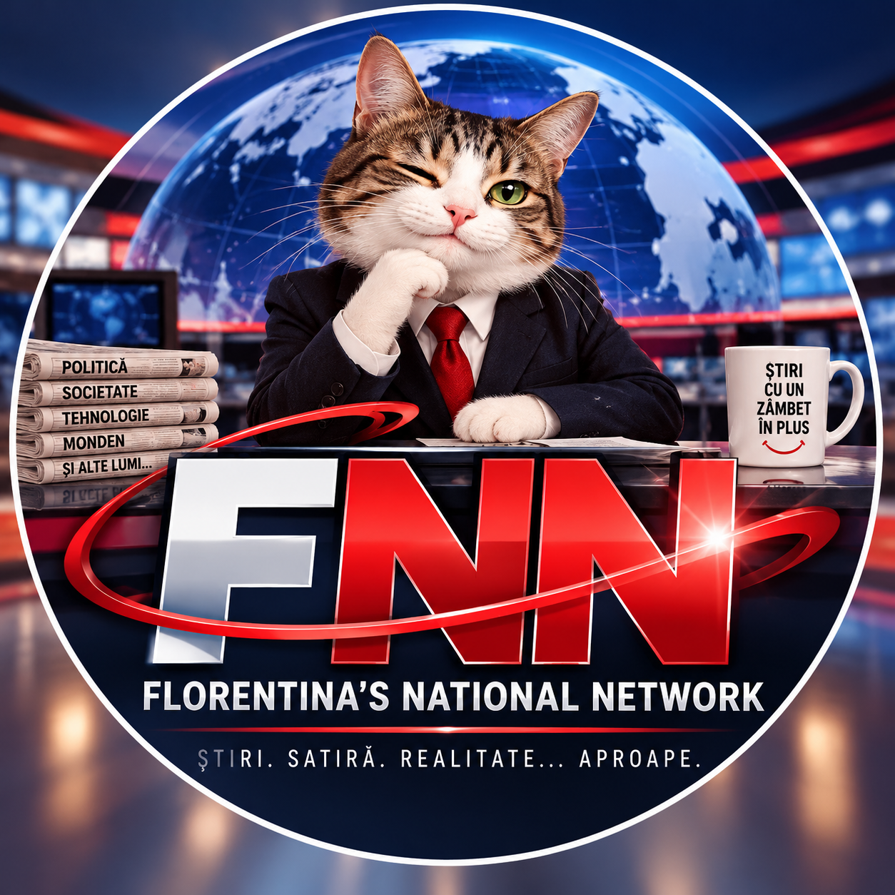

Internetul a fost reparat până n-a mai mers deloc. Un calculator supraviețuiește cu Internet importat din Germania

O conexiune la Internet a intrat într-o etapă tehnologică nemaivăzută după ce a decis că folosirea simultană a protocoalelor IPv4 și IPv6 este un moft burghez și că unul singur ar trebui să fie suficient pentru toată lumea.
Problemele au început simplu: IPv6 funcționa, IPv4 nu.
Google mergea. Wikipedia mergea. Alte site-uri însă dispăruseră într-o dimensiune paralelă, unde fiecare încercare de conectare se termina după zeci de secunde cu un timeout.
Un test efectuat cu răbdare exemplară i-a acordat unui site nu mai puțin de 42 de secunde pentru a răspunde prin IPv4.
Site-ul a folosit acest timp pentru a reflecta asupra existenței și nu a răspuns.
Furnizorul a intervenit urgent și a rezolvat jumătatea care încă funcționa
După sesizarea problemei, furnizorul de Internet a efectuat o deconectare și o reconectare.
Rezultatul a fost imediat.
Dacă înainte funcționa IPv6 și nu funcționa IPv4, după intervenție nu mai funcționa nici IPv6.
Specialiștii FNN consideră că aceasta este una dintre cele mai eficiente metode cunoscute pentru eliminarea diferențelor dintre cele două protocoale.
IPv4: NU
IPv6: NU
Egalitate perfectă.
După o nouă intervenție, IPv6 a revenit la viață, în timp ce IPv4 a continuat să contemple posibilitatea revenirii într-o bună zi.
Un singur calculator din casă refuză să moară
Situația a devenit și mai interesantă după ce s-a constatat că un calculator poate totuși accesa o parte din Internet.
Al doilea calculator nu are Internet.
Wi-Fi-ul nu are Internet.
Primul calculator are Internet, dar numai dacă definiția cuvântului „Internet” este suficient de flexibilă.
Google și Wikipedia funcționează datorită IPv6. Site-urile dependente de IPv4, în schimb, nu răspund.
Pentru acestea a fost improvizată o soluție DNS64/NAT64, prin care calculatorul folosește conexiunea IPv6 funcțională și trimite traficul destinat Internetului IPv4 printr-un serviciu intermediar.
Rezultatul?
Site-urile au început să funcționeze.
Există doar un mic detaliu.
Calculatorul pare acum să fi emigrat digital în Germania.
Utilizator aflat fizic în România, calculator aflat spiritual la Frankfurt
Unele servicii care folosesc IPv6 văd în continuare conexiunea normală din România.
În schimb, site-urile IPv4 accesate prin soluția temporară pot vedea adresa de ieșire a infrastructurii NAT64, geolocalizată în Germania.
Astfel, același calculator poate purta simultan două identități geografice:
Site IPv6: „Bună ziua, România!”
Site IPv4: „Guten Tag, Frankfurt!”
Utilizatorul: „Eu n-am plecat nicăieri.”
Internetul nu a oferit comentarii.
Fibra de 1 Gbps face cosplay de dial-up
Soluția improvizată funcționează surprinzător de bine, însă vine cu anumite compromisuri.
Un test de viteză efectuat prin traseul alternativ a indicat aproximativ:
279 Mbps download
380 Mbps upload
86 ms ping
Conexiunea normală este de 1 Gbps.
Cei 86 ms au oferit experienței un parfum discret de Internet vintage, deși viteza de sute de Mbps ar fi provocat probabil leșinul instantaneu al unui modem dial-up din 1999.
Specialiștii FNN descriu tehnologia drept:
„fibră optică de mare viteză cu suflet de modem.”
Testul de viteză nu putea fi accesat pentru a testa viteza Internetului care nu funcționa
Într-o dezvoltare considerată perfect logică de infrastructura modernă, site-ul folosit pentru testarea conexiunii la Internet nu putea fi accesat prin conexiunea defectă.
A devenit accesibil numai după activarea soluției DNS64/NAT64.
Astfel, pentru a afla cât de prost funcționează Internetul, a fost necesar mai întâi ca utilizatorul să își construiască un alt drum către Internet.
FNN consideră că acesta este echivalentul digital al situației în care un service auto îți cere să vii cu mașina defectă la sediu, iar pentru a ajunge acolo trebuie mai întâi să construiești o altă mașină.
Calculatorul a primit propriul paznic pentru IPv4
Pentru că nimeni nu știe exact când va reveni IPv4, un script local a primit o nouă responsabilitate: să verifice periodic dacă protocolul s-a întors dintre cei dispăruți.
Atunci când soluția DNS64/NAT64 este activă, scriptul știe că accesarea cu succes a unui site IPv4 nu dovedește că furnizorul a reparat problema.
Prin urmare, efectuează separat teste IPv4 native.
Dacă acestea continuă să eșueze, verdictul este simplu:
Internetul nu este reparat. Doar îl ocolim.
Dacă într-o zi testul IPv4 nativ va reuși, utilizatorul va fi informat că furnizorul ar putea, în sfârșit, să fi reparat conexiunea și că soluția temporară poate fi oprită pentru confirmare.
Până atunci, scriptul veghează.
IPv4 este dat dispărut.
Telefonul mobil, declarat infrastructură critică națională a locuinței
În timp ce un calculator supraviețuiește prin IPv6 și un pod virtual către Germania, alt calculator nu are Internet, iar Wi-Fi-ul refuză colaborarea, telefonul conectat la date mobile continuă să funcționeze normal.
Acesta a fost promovat neoficial la rangul de:
„ultimul dispozitiv care mai știe unde se află Internetul.”
Precizare serioasă FNN
DNS64/NAT64 poate fi o soluție tehnică legitimă și este folosit inclusiv în arhitecturi IPv6-only proiectate special în acest scop. Problema descrisă aici este diferită: soluția este folosită temporar pentru a ocoli o conexiune IPv4 defectă.
Faptul că anumite site-uri devin accesibile printr-un serviciu NAT64 terț nu înseamnă că problema furnizorului a fost rezolvată. Pot apărea latență suplimentară, geolocalizare greșită, probleme cu anumite aplicații și servicii sau verificări suplimentare de securitate.
Reparația reală rămâne restabilirea unei conexiuni normale și stabile pentru toate dispozitivele.
Până atunci, Internetul funcționează.
În sensul foarte generos al cuvântului „funcționează”. Acesta este un pamflet. XD.
Materialele satirice/pamflet sunt prezentate ca atare; materialele marcate explicit altfel pot avea alt caracter editorial.